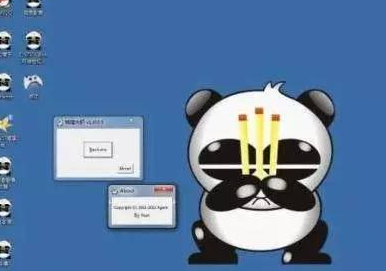

今天，村长揭秘一个偏门项目，这个项目貌似违法，如果抓住了，是要坐牢的，所以，不建议大家去做，本文也只是揭秘一下，禁止操作，那么，是什么偏门项目呢？那就是攻击同行网站赚钱。
村长无论是写偏门生意还是偏门项目，都喜欢举例子，而且都是真实的例子，攻击同行网站这个偏门项目村长也举一个真实的例子，那就是自己。
国庆期间，村长在家休息的时候，那是7号的晚上，村长的偏门屋站点（9gyou.com）打不开了，于是问了一下空间服务商，对方说被攻击了，于是过了一会，网站又打开了。
而到了9号，头中午的时候，站点又打不开看，于是又找服务商，过了一会又打开了。
看来村长的偏门屋网站被攻击了，听说攻击别人的站点也能赚钱，不知道是不是真的？
揭秘一个不为人知的偏门项目，攻击同行网站也能赚钱？！
记得大概是7、8年以前，村长有一个哥们，也是做SEO的，当然比村长早几年，他其中一个SEO站点，站点就不放出来了，以免广告嫌疑，当时“网站优化”这个词在百度首页，那时候没有现在指数这么高，当时应该有1000左右的指数吧，现在都已经上万了，可见做SEO的人和SEO需求者还是很多。
当时，他这个站点就被攻击了，连着好几天打不开，而当时他一天最少有十几个精准客户订单，光接seo单子，少说一个月也赚2、3万吧，那时候是2011-2013年的时候，对于一个二线城市来说，已经很厉害了，当时村长一个月也就赚2、3千。
之所以赚钱，所以，肯定被同行盯上了，于是他的站被攻击了，好几天打不开，他也折腾了半天，也换了几个空间，依然被攻击，后来干脆不管了，后来有人还加他QQ，当时QQ比较流行，对方说，他是别人花钱雇的，让我哥们只需给他600块钱，就停止攻击。
（可能很多同行这时候会花钱买个心理安慰，但是，你这样做了，可能对方还是会花钱雇其他的人，你这就是助纣为虐了，因为对方就想看到你害怕的样子，紧张的样子，所以遇到这种情况，有实力的可以花钱买更安全的服务器（这样的服务器，一般没有实力的人是不会花钱攻击你的站点的，因为，成本太高），或者别理对方就行了。）
我哥们没有理对方，于是，对方攻击了大概一周左右的时间，就停止了，可能对方没有捞到好处就不做了，因为，攻击别人站也是需要成本的，按当时的价格，村长大概推算估计攻击一天，也就50元吧。
（后来，村长又查了一下，不是一天50元，是1个小时差不多50元，如果攻击一天，小一千块钱，一个月下来就是3万，除非你的网站商业价值超高，对于小打小闹的站点，一般人是不可能花这么多钱去攻击你的站点的，但是，对于一些国内限流量的空间，攻击一个小时可能就瘫痪了，但是对于不限流量的站点来说，影响不大，顶多打不开一个小时，然后你不攻击了，又打开了，有本事你一天24小时攻击？）
即使是一天攻击你一个小时，花50元，虽然不多，但是，如果这样算下来，攻击一个站点，一个月最少成本是1500元，你要是不差钱还行，但是对于一般的站长来说，可能一年还赚不到1500，因为，很多站长都处于亏钱状态，真正赚钱的站长还是少数。做的比较好的站长，做的最牛的，比如：暴疯团队博客，往年可能一年赚50-100万，但是，今年也说不好了，而大部分的站长处于亏钱状态，我们能看到的，好点的，一年赚的钱绝对不会超过10万块钱。所以，他们也不可能去花钱攻击对方，不值当的，除非那些做不上去的站长，就是妒忌心太强了，小人心里。
还有就是，白帽SEO是不怕你攻击的，就算几天打不开，影响也不大，哪怕一个月打不开，顶多排名掉了，等你不攻击了，正常打开了，排名自然又会恢复，而且，现在百度对个人站有保护功能，那就是百度有闭站保护，最长时间是180天，也就是6个月，只要在这个范围内，随时关站，随时打开，排名都会有保护，你可以算一下攻击一个站点的成本。
对于村长来说，站点打不开了，顶多少赚点钱被，对于那些同行来说，我还是建议你把自己的站点做好吧，只有你做好了，超过我，才能赚到钱，否则，有什么用呢？花了钱，你也得不到任何好处。
也不知道是哪位人士对本站这么感兴趣？
攻击你的站点，无非两种人：第一种人是同行，第二种人就是菜鸟黑客，初学者，拿你的站练手。
攻击同行网站也能赚钱？！
先说第一种人，无非就是找一些菜鸟黑客，花钱攻击你的站点，导致你的网站长时间的打不开，这样做的目的就是想把你的网站排名搞下去。
这种人，可恨，也可怜，
可恨的是自己的站点做不上去，也不想你的站点上去，嫉妒心很强，见不到别人好，于是就想把你整下去，当然是要花钱的，至于花多少，看攻击的时间长短和该网站的商业价值。
可怜的是，这样的攻击对白帽SEO了来说是无效的，不就是网站有一段时间打不开吗，对村长来说影响不大，因为村长的偏门屋用的是白帽SEO，仅凭你这样的攻击，排名就掉了，你太天真了，因为，百度每天都会抓取你的站点，就算你的站打不开了，顶多过一段时间再来吧，你什么时候能打开，百度蜘蛛再来，就像一个饭店，每天人挺多，突然关门了，自然就没人了，但是，有一天又开张，依然人很多，除非你一直关门，上面也提到了百度闭站保护，如果你的站点经常被攻击，可以试试这个，效果还可以。
再说一下第二种人，就是菜鸟黑客，拿别人站点练手的这种人，只能说这种人闲的没事干，因为，你这样做，谁也没有好处啊，除非你找我要钱，但是，如果这样的话，更容易找到你，找到你了，就有证据，你这属于敲诈，违法了，如果村长把这些证据交给警察，你以后的日子也不好过了吧？

当然，黑客肯定比较低调的，一般的黑客也不会这样做，所以，我们只说第一种人。
关于第一种人，村长现在做的事情就是收集证据然后进行举报：比如：对方经常出现ip地址，公司名字，法人，地址，联系方式，网址等等，
对于小白来说，很容易找到，对老司机，可能有点难度，但是，有一句话很真实，那就是没有不漏风的墙，做坏事久了早晚会露出马脚。
一旦村长找到你攻击我站点的证据，立马提交给当地网警进行报警处理。
ps：攻击同行的站，是不道德行为，也违法行为，一旦发现，立刻进行报警处理，而且，你这样做，谁也得不到好处，可能这样村长少赚点钱，但是，村长是不需要成本的，而你攻击我的站是需要成本的，如果你不好好做的你站点，那么，最终就是花了钱，也费了精力，而且什么也没有得到，只能解决一时爽，小学生作为。
与其这样，你不如加村长好友，学习一下SEO知识，或许对你的站点有帮助，再或者给村长介绍几个客户，你赚点中间差，这样多好，现在是利益的社会，双方互利才能共赢，才能进步。